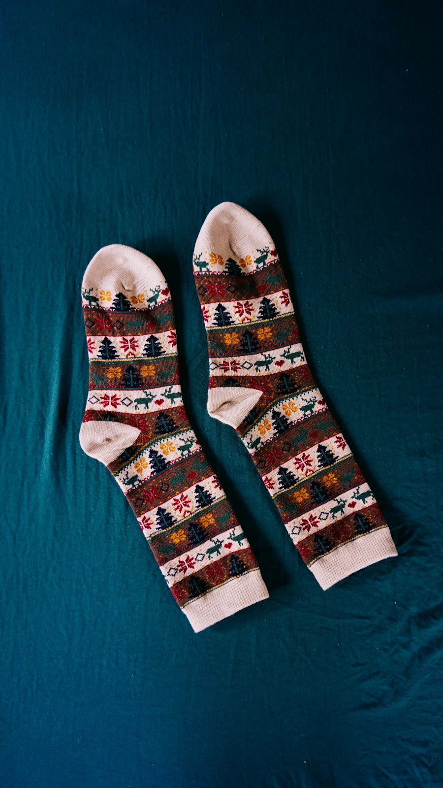

완성 예시 실물
정석 힐플랩 핏

🧦 클래식 커프다운 힐플랩 양말
발목부터 시작해 뒤꿈치 각도를 가장 견고하게 감싸는 정석 구조
💡 제작 포인트: 네덜란드식 사각 뒤꿈치(Heel Flap & Gusset)로 발등이 높은 발형에 가장 편안하며 구멍 없이 탄탄합니다.
STEP 1 · 발 사이즈 & 게이지 입력
약 30초 소요
10cm 메리야스 게이지
2.25~2.5mm 삭스얀 권장
가로 코수 (10cm)
코
세로 단수 (10cm)
단
240mm
mm
22cm
cm
도출된 양말 맞춤 도안 수치
4등분 바늘 배수 최적화
시작 원형 코잡기 (Cast-on)
60
코
발둘레 22cm (-10% 적용 실치수 19.8cm) ➔ 4의 배수 맞춤 60코 (매직루프 앞뒤 30코씩)
힐 플랩 (뒤꿈치 벽)
30코 / 30단
반코로 슬립스티치 강화
발가락 줄임 시작점
뒤꿈치부터 19.5cm
총 발길이 24cm - 4.5cm
예상 실 소요량
약 1볼 (한 켤레)
1볼 100g (약 400m) 기준
PRACTICAL ROADMAP
닳지 않는 뒤꿈치 특급 공식
실전 양말 뜨개 5단계 가이드 (커프다운 - 힐플랩 정석)
print
도안 인쇄 및 PDF 내보내기
관리자 전용불필요한 웹 UI를 제거하고 힐플랩/거셋 수치와 5단계 실전 가이드만 A4 2장 규격으로 출력합니다.